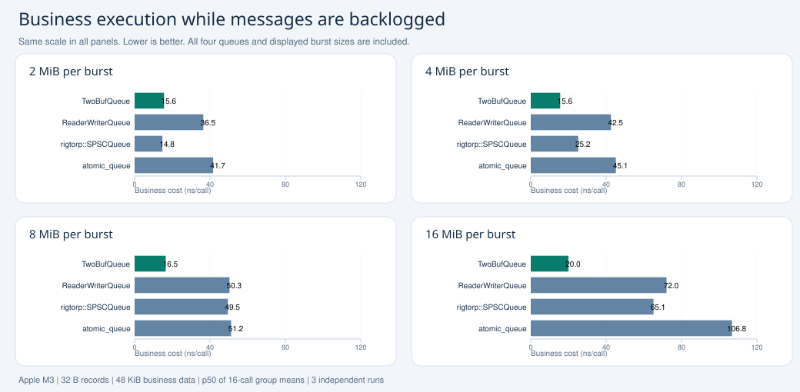

TwoBufQueue
Small producer buffers. Batch copying. Independent callbacks.
让生产者保持小缓存，让消费者拥有处理积压的空间。
消息积压对热路径业务的影响
16 KiB source pool · 256 MiB output pool · 32 B messages
Open report →WriteSession单块循环写入
256 MiB · empty callback · 3 independent runs
Open report →Publication at block handoff普通 write：最大发布批次
256 MiB · empty callback · 3 independent runs
Open report →Publication every record普通 write：每条发布
256 MiB · empty callback · 3 independent runs
Open report →Business execution under message backlog

Same 48 KiB business data set and 32 B message contents, approximately 198–205 MiB pending. TwoBufQueue uses 16 KiB of source buffers; native SPSC queues use 256 MiB of slots. These plots time business queries following a burst, not queue writes. Every displayed queue and burst size is included.
Group-average p50, averaged across three independent runs. High producer QoS; no hard CPU affinity. Full results and initialization parameters are linked in each report.Read the numbers correctly
Write reports measure producer submission cost in groups of 1,000 writes. The backlog report measures business execution in groups of 16 calls. Neither is individual-message or end-to-end latency. Thread counts, source/output pools and upstream payload construction choices are stated in each report; rankings apply to the recorded setup.
Methodology and reproduction · Publication contents · Publishing steps
Additional measurements and earlier experiments
- performance 256m callback
- performance 256m callback session
- performance 8m 16b 32b 64b tuned
- performance 8m 16b 32b tuned
- performance 8m 32b latency
- performance 8m zero
- performance 8m zero session
- performance burst business sizes
- performance burst tail 1m
- performance burst tail instruction 1m
- performance hot path cache
- performance optimal ordinary readback reader2g zero
- performance optimal three modes reader2g zero
- test per write block size only writer publish1
- test per write block size only writer publish max
- test per write block size only writer reader80 3runs publish1
- test per write block size only writer reader80 3runs publish max
- test per write block size readback fixed reader 3runs
- test per writer block size
- test per writer block size cache hits
- test per writer block size max comparison 3runs
- test per writer block size no current
- test per writer block size no current publish1
- test per writer block size reader80 3runs max